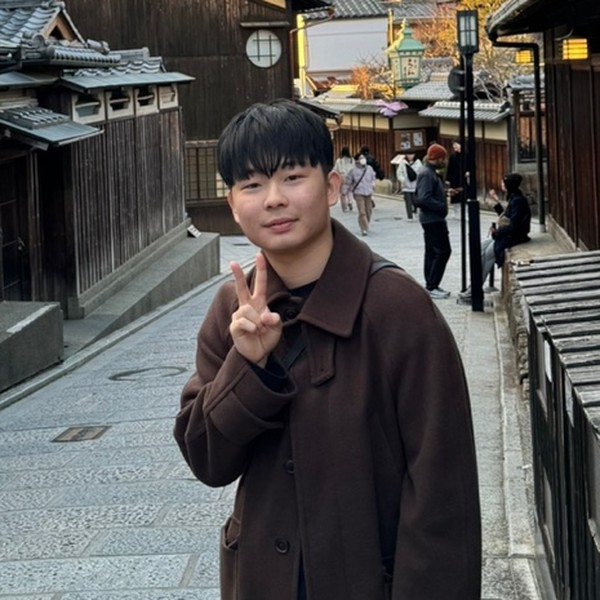

DONGHOON KIM
M.S. Student, Electrical & Electronic Engineering
SWARM Lab, Pusan National University
RF/microwave researcher working on in-band full-duplex (IBFD) front-ends, self-interference cancellation (SIC), integrated sensing and communication (ISAC), and antenna design.
IBFDSICISACAntenna Design
HIGHLIGHTS
IEEE MWTL paper (first author) · Under review
Publications →C-Band ISAC demonstration · ISPACS 2026 (Poster)
Publications →Best Paper Award (Poster) · KIEES Winter Conference
Awards →M.S. thesis on ISABC · Expected Feb. 2027
Research →
ABOUT
I am an M.S. student at Pusan National University, advised by Prof. Sangkil Kim. My research focuses on RF/microwave front-ends for in-band full-duplex (IBFD) systems, self-interference cancellation (SIC), integrated sensing and communication (ISAC), and antenna design.
EDUCATION
2025 – 2027.02
(expected)
M.S. in Electrical & Electronic EngineeringPusan National University · Advisor: Prof. Sangkil KimThesis: A Study on Implementation Techniques for an Integrated Backscatter Communication and FMCW Radar (ISABC) System
2025
B.S. in PhysicsPusan National University · Double major in Electronics Engineering
SKILLS
HFSSCadencePythonMATLABLaTeX